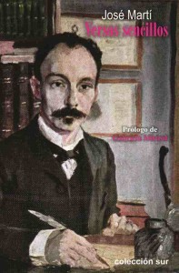
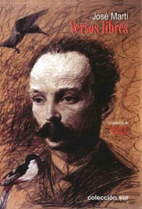
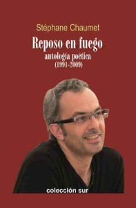
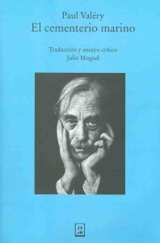
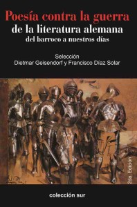
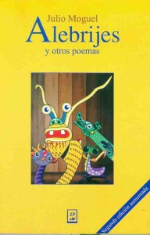

Versos sencillos. José Martí
Son los versos de Martí que más se apegan al oído, se hincan en todas las memorias, nos caen solos a las manos cuando buscamos decir algo suyo. Su milagro es que tienen la semilla genuina del ser de Martí.
Sabato 11 a las 12m. Participan Pedro Pablo Rodríguez, Yusuam Palacios, Roberto Fabelo y Khamil Buyaudi.

Versos libres. José Martí
Estas que ofrezco, non
son composiciones acabadas: son notas de imágenes tomadas al vuelo. Por qué las publico, no sé: tengo un miedo pueril de no publicarlas ahora. Yo desdeño todo lo mío: y a estos versos, atormentados y rebeldes, los mimo, y los amo.Sabato 11 a las 12m. Participan Pedro Pablo Rodríguez, Yusuam Palacios, Roberto Fabelo y Khamil Buyaudi.
Cantar de Alejandro
La historia nos enseña que la poesía también se escribe con la piel y con la sangre, que constituye la historia de Cuba. Por eso a Fidel Castro lo homenajean con poemas que se agiten en el aire como una rosa blanca.
Sabato 11 a la 1pm. Presenta Alex Pausides. Participan Corina Mestre, Alden Knight, Rolando Núñez y otros actores.

Fidel señala el camino
Compilación de valor testimonial. La mayoría de sus escritores conocieron al Comandante Fidel y guardan con orgullo inocultable detalles de su vida dedicada al pueblo cubano.
Sabato 11 a la 1pm. Presenta Alex Pausides. Participan Corina Mestre, Alden Knight, Rolando Núñez y otros actores.


Reposo en fuego. Stéphane Chaumet
Recopilación de poemas de obras como Fisuras (1999), En la desnudez del tiempo (2007), Urbanas
miniaturas (2007), La travesía de la errancia (2010) y Los cementerios engullidos (2013).Sabato 11 a las 3pm. Presenta Sinecio Verdecia.

El cementerio marino. Paul Valéry
Este es un libro con poemas que nunca dejarán de traducirse. Es un texto que implica una especie de confesión sentimental, y que se justifica sobre todo por el hecho de que la conclusión será la determinación de una actitud, el paso de la pura contemplación a la acción creadora. (Editorial Juan Pablos)
Sabato 11 a las 3pm. Presenta Patricio Zapata (Messico).
La mañana antes del viaje. Julian Schütting
La historia del vínculo que une a dos niños desde su infancia, del camino y de la vocación artística que fue creciendo con ellos, reflejada en sus juegos y vivencias, conversaciones, sueños y visiones, y también en su pasión por ser siempre todavía niños.
Sabato 11 a las 3pm. Presentan Olga Sánchez Guevara y Francisco Díaz Solar.


Poesía contra la guerra de la literatura alemana del barroco a nuestros días
Esta recopilación viaja por la historia alemana de los pasados cuatro siglos. La cronología de las más importantes décadas y sus peores confrontaciones, cobran vida en la perspectiva de significativos textos que la condensan de manera crítica y concisa.
Sabato 11 a las 3pm. Presentan Olga Sánchez Guevara y Francisco Díaz Solar.
La mañana antes del viaje. Julian Schütting
Una muestra de poesía de autores alemanes, austríacos y suizos, que abarca desde la aparición del dadaísmo en 1916 hasta el final de la Segunda Guerra Mundial, in 1945.

Sabato 11 a las 3pm. Presentan Olga Sánchez Guevara y Francisco Díaz Solar.

Alebrijes y otros poemas. Julio Moguel
Segunda edición de estos versos políticos de Moguel que nos mueven, nos revuelven, porque se ubican en el terreno de la poesía en los que su autor hace política y nos produce el dolor que no tenemos o, con más exactitud, que no querríamos tener.
(Editorial Juan Pablos)Sabato 11 a las 3pm. Presenta Patricio Zapata (Messico).